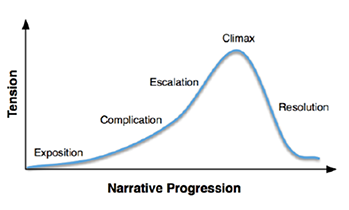

It is very important that you follow the universal script writing format, especially if you want to be publishing it. Els why it is just a good idea to do it this way, because it makes it a lot easier to film. It also tells how long it will take to film the script.
In general, the four main thing you must do is:
- Write in courier 12 pt. font.
- Use the industry standard script format.
- Show not tell.
- Plan your script.
A good tip is to use a script writing software, to create the format.
World building
One of the first things you do, is building your world. This a very creative process, that will benefit your script writing. You simply have to imaging what world you want your story to be a part of;
- What technology is available?
- How is the nature and climate, and how does this affect the economics and politics?
- Is it a religious place, and which religion?
- What is the history of the world?
This is not only for fiction or fantasy, but also for the real-life world. In “Friends” and “Sex and the city”, New York is not portraited the same.
Characters
Now that you got a world, you also need characters in it.
- Who is your main character?
- What does the character want?
- What prevents the characters from getting it?
These questions will guide you on how to build the plot and obstacles of your movie.
Synopsis/Dramaturgy
This is the essence of the story, and the order it is told in. There are multiple ways of setting up your plot, but the most common arrangement is the “Recounts model” also called “Dramatic structure”;
- Beginning.
- Inciting incident.
- First turning point.
- Call to action.
- Point of no return.
- All is lost Second turning point.
- Climax.
- The end.

Recounts model (Credit: Seung Y. Lee)
Dialog
You have to write dialogs that sounds authentic for the world, and the character. Make sure it sounds natural, try saying it out loud. It is a good thing to be aware of not copywriting other sentences from movies.
Process
Remember to think about the goal, when you lose your motivation. There is a lot to this whole process, and you sometimes have to do it all over to make sure to get it right.
You have to ignore that inner voice, saying that there is no chance that this is going to be produced. Cause when you get it all right, it is the best feeling! Getting all your writing into images that forms a movie.